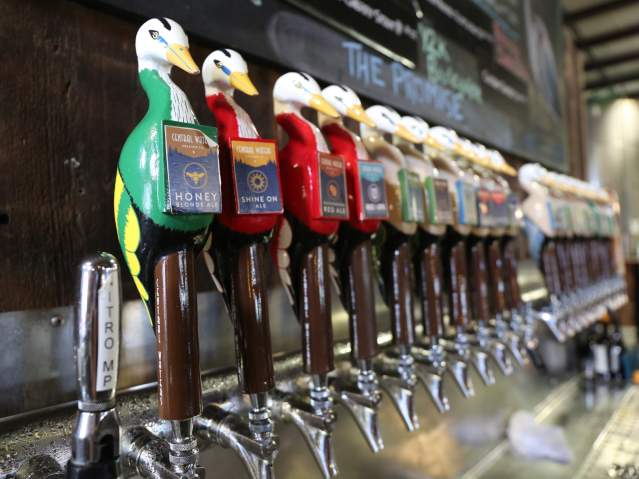

Wisconsin Craft Beer & Cheese Trail
With more craft breweries and cheese makers than one could ever imagine exisiting in one place, this trail offers a great opportunity to explore the best of the best.
What to Look Forward To
Craft Beer flights and cheese tastings are just a small sample of what you will get to experince along this trail. Here are a couple more fun activites to look forward to.
- Guided brewery and creamery tours
- Hands on workshops teaching the cheesemaking process
- Special behind the scenes looks into how your favorite craft beer goes from an idea to a bottle.
